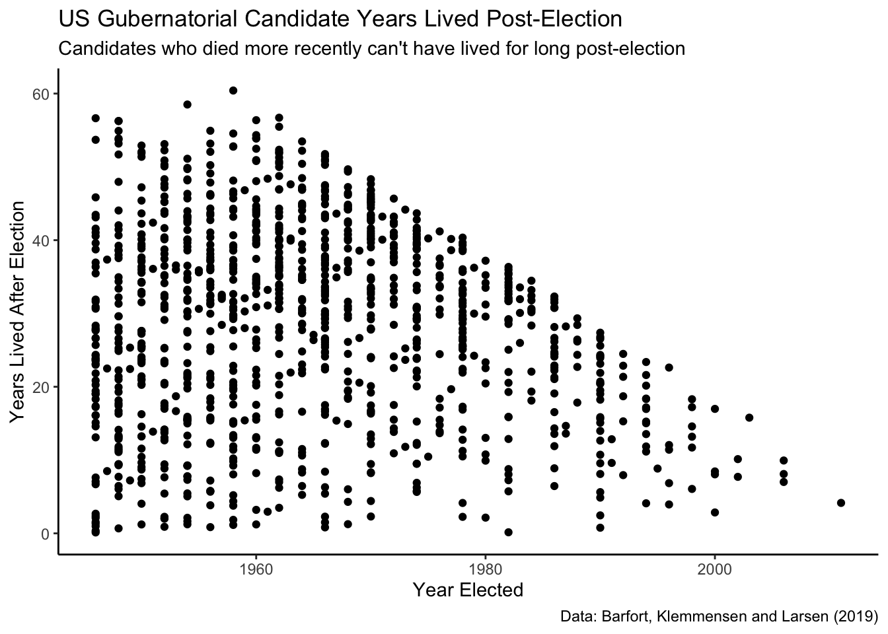
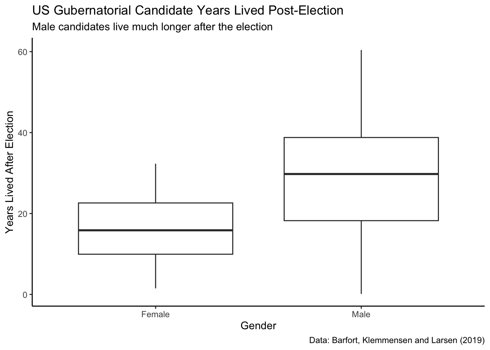
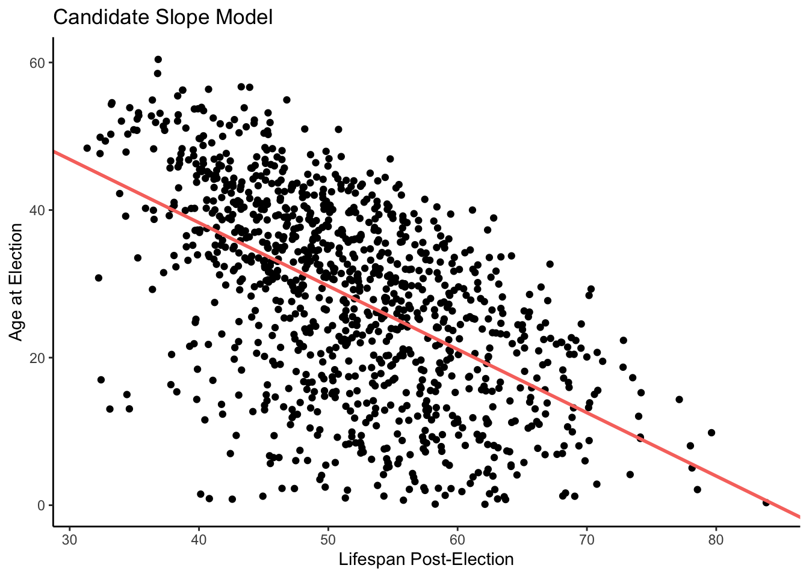
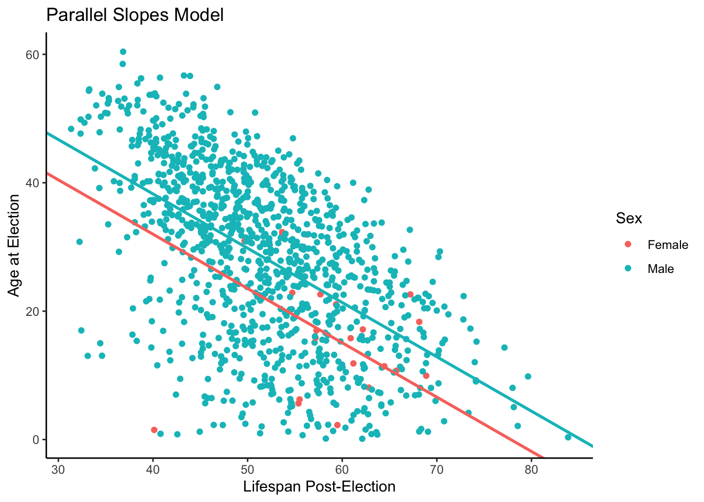
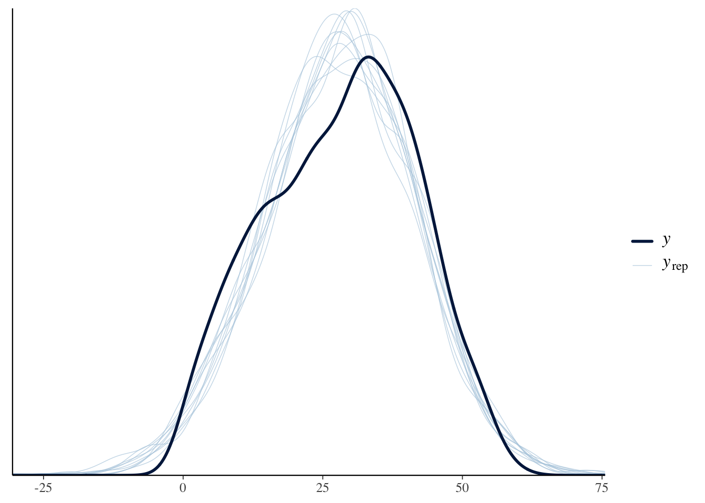
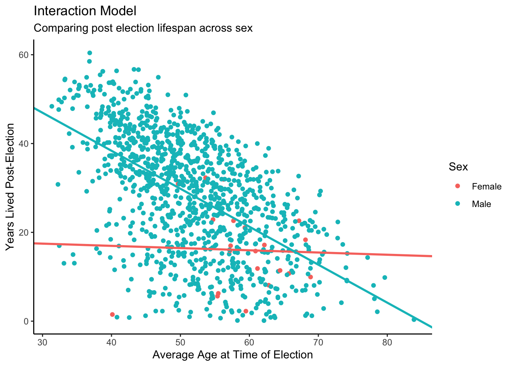

9 Five Parameters
Let’s learn about interactions. The effect of a treatment relative to a control is almost never uniform. The effect might be bigger in women than in men, smaller in the rich relative to the poor. The technical term for such effects is “heterogeneous,” which is just Ph.D.’ese for “different.” With enough data, all effects are heterogeneous. Causal effects, at least in the social science, always vary across units. To model this reality, we rely on interactions, on allowing the effect size to differ. The same applies for predictive models. The relationship between our outcome variable \(y\) and a predictor variable \(x\) is rarely constant. The relationship varies based on the values of other variables. To take account of interactions, we need models with at least 5 parameters.
Packages:
Follow the Cardinal Virtues and tackle each problem step by step. Remember the process: first we use Wisdom, next Justice, next Courage, and finally Temperance. Each Cardinal Virtue plays role in answering the question that we have at hand.
9.1 Wisdom

Wisdom requires the creation of a Preceptor Table, an examination of our data, and a determination, using the concept of validity, as to whether or not we can (reasonably!) assume that the two come from the same population.
Consider the following question:
How long do political candidates live after the election?
9.1.1 Preceptor Table
A Preceptor Table is smallest possible table with rows and columns such that, if there is no missing data, our question is easy to answer.
To create our Preceptor Table, we examine:
Causal or predictive model: We have a predictive model since there is just one outcome: a candidate’s longevity.
Units: Our units for this scenario would be candidates because the questions are about the life expectancy of unique individuals.
Outcome: The number of years a candidate lives after the election.
Treatment: Since this is a predictive model there is no treatment per se. Any variable which one might consider a treatment is just another covariate in this context.
Covariates: We know a variety of information about each candidate.
Moment in Time: It is unclear to what moment in time the question refers. Is it interested in all candidates who are running in the next election? All those running in the future? Let’s choose to focus in candidate longevity in this century.
How many years would we expect political candidates in election years after 2000 to live?
Our Preceptor Table:
| Preceptor Table | ||||
|---|---|---|---|---|
| ID | Outcome | Covariates | ||
| Years Lived After | Sex | Year of Election | Age at Election | |
Candidate 1 |
12 |
Female |
2000 |
63 |
Candidate 2 |
7 |
Male |
2012 |
47 |
… |
… |
… |
… |
… |
Candidate 10 |
10 |
Female |
2012 |
52 |
Candidate 11 |
11 |
Female |
2024 |
75 |
… |
… |
… |
… |
… |
Candidate N |
6 |
Male |
2050 |
68 |
With the Preceptor Table, we can calculate anything related to longevity because we know how many years each candidate lived after an election. But, in reality, many of these candidates are still alive, so we don’t know how long they will live.
Note also that the Preceptor Table stops with elections in 2050. So, implicitly, we have changed our question to:
How many years would we expect political candidates in election years between 2000 and 2050 to live?
The question, the Preceptor Table and the data evolve together in an iterative process.
9.1.2 EDA of governors
The primer.data package includes the governors data set which features demographic information about candidates for governor in the United States. Barfort, Klemmensen, and Larsen (2020) gathered this data and concluded that winning a gubernatorial election increases a candidate’s lifespan.
Show the code
glimpse(governors)Rows: 1,092
Columns: 14
$ state <chr> "Alabama", "Alabama", "Alabama", "Alabama", "Alabama", "A…
$ year <int> 1946, 1946, 1950, 1954, 1954, 1958, 1962, 1966, 1966, 197…
$ first_name <chr> "James", "Lyman", "Gordon", "Tom", "James", "William", "G…
$ last_name <chr> "Folsom", "Ward", "Persons", "Abernethy", "Folsom", "Long…
$ party <chr> "Democrat", "Republican", "Democrat", "Republican", "Demo…
$ sex <chr> "Male", "Male", "Male", "Male", "Male", "Male", "Male", "…
$ died <date> 1987-11-21, 1948-12-17, 1965-05-29, 1968-03-07, 1987-11-…
$ status <chr> "Challenger", "Challenger", "Challenger", "Challenger", "…
$ win_margin <dbl> 77.334394, -77.334394, 82.206564, -46.748166, 46.748166, …
$ region <chr> "South", "South", "South", "South", "South", "South", "So…
$ population <dbl> 2906000, 2906000, 3058000, 3014000, 3014000, 3163000, 332…
$ election_age <dbl> 38.07255, 78.54894, 48.74743, 46.54620, 46.07255, 33.2703…
$ death_age <dbl> 79.11567, 80.66530, 63.31006, 59.88227, 79.11567, 87.8193…
$ lived_after <dbl> 41.043121, 2.116359, 14.562628, 13.336071, 33.043121, 54.…There are 14 variables and 1,092 observations. In this Chapter, we will only be looking at the variables last_name, year, state, sex, lived_after, and election_age.
ch7_a <- governors |>
select(last_name, year, state, sex, lived_after, election_age)election_age and lived_after are how many years a candidate lived before and after the election, respectively. As a consequence, only politicians who are already deceased are included in this data set. This means that there are only a handful of observations from elections in the last 20 years. Most candidates from that time period are still alive and are, therefore, excluded.
One subtle issue: Should the same candidate be included multiple times? For example:
ch7_a |>
filter(last_name == "Cuomo")# A tibble: 4 × 6
last_name year state sex lived_after election_age
<chr> <int> <chr> <chr> <dbl> <dbl>
1 Cuomo 1982 New York Male 32.2 50.4
2 Cuomo 1986 New York Male 28.2 54.4
3 Cuomo 1990 New York Male 24.2 58.4
4 Cuomo 1994 New York Male 20.2 62.4For now, we leave in multiple observations for a single person.
First, let’s sample from our data set.
Show the code
ch7_a |>
slice_sample(n = 5)# A tibble: 5 × 6
last_name year state sex lived_after election_age
<chr> <int> <chr> <chr> <dbl> <dbl>
1 Ristine 1964 Indiana Male 44.6 44.8
2 Sundlun 1986 Rhode Island Male 24.7 66.8
3 Richards 1990 Texas Female 15.9 57.2
4 Turner 1946 Oklahoma Male 26.6 52.0
5 Williams 1948 Michigan Male 39.2 37.7As we might expect, sex is more often “Male”. To be more precise in inspecting our data, let’s skim() the data set.
Show the code
skim(ch7_a)| Name | ch7_a |
| Number of rows | 1092 |
| Number of columns | 6 |
| _______________________ | |
| Column type frequency: | |
| character | 3 |
| numeric | 3 |
| ________________________ | |
| Group variables | None |
Variable type: character
| skim_variable | n_missing | complete_rate | min | max | empty | n_unique | whitespace |
|---|---|---|---|---|---|---|---|
| last_name | 0 | 1 | 3 | 11 | 0 | 615 | 0 |
| state | 0 | 1 | 4 | 14 | 0 | 50 | 0 |
| sex | 0 | 1 | 4 | 6 | 0 | 2 | 0 |
Variable type: numeric
| skim_variable | n_missing | complete_rate | mean | sd | p0 | p25 | p50 | p75 | p100 | hist |
|---|---|---|---|---|---|---|---|---|---|---|
| year | 0 | 1 | 1964.85 | 13.38 | 1945.00 | 1954.00 | 1962.00 | 1974.00 | 2011.00 | ▇▆▃▂▁ |
| lived_after | 0 | 1 | 28.23 | 13.38 | 0.13 | 17.57 | 29.60 | 38.67 | 60.42 | ▃▆▇▆▂ |
| election_age | 0 | 1 | 51.72 | 8.71 | 31.35 | 45.34 | 51.36 | 57.48 | 83.87 | ▂▇▆▂▁ |
skim() groups the variables together by type and provides some analysis for each variable. We are also given histograms of the numeric data.
Looking at the histogram for year, we see that it is skewed right — meaning that most of the data is bunched to the left and that there is a smaller tail to the right — with half of the observations from election years between 1945 and 1962. This makes sense logically, because we are only looking at deceased candidates, and candidates from more recent elections are more likely to still be alive.
In using this data set, our left-side variable will be lived_after. We are trying to understand/predict how many years a candidate will live after the election.
Show the code
ch7_a |>
ggplot(aes(x = year, y = lived_after)) +
geom_point() +
labs(title = "US Gubernatorial Candidate Years Lived Post-Election",
subtitle = "Candidates who died more recently can't have lived for long post-election",
caption = "Data: Barfort, Klemmensen and Larsen (2019)",
x = "Year Elected",
y = "Years Lived After Election") +
scale_y_continuous(labels = scales::label_number()) +
theme_classic() 
Note that there is a rough line above which we see no observations. Why might this be? When looking at the year elected and years lived post-election, there is missing data in the upper right quadrant because it is impossible to have been elected post-2000 and lived much more than 11 years. (Note that the last election in this data was in 2012.) Simply put: this “edge” of the data represents, approximately, the most years a candidate could have lived, and still have died, given the year that they were elected.
The reason the data is slanted downward is because the maximum value for this scenario is greater in earlier years. That is, those candidates who ran for governor in earlier years could live a long time after the election and still have died prior to the data set creation, giving them higher lived_after values than those who ran for office in more recent years. The edge of the scatter plot is not perfectly straight because, for many election years, no candidate had the decency to die just before data collection. The reason for so few observations in later years is that fewer recent candidates have died.
To begin visualizing our lived_after data, we will inspect the difference in years lived post election between male and female candidates.
Show the code
ch7_a |>
ggplot(aes(x = sex, y = lived_after)) +
geom_boxplot() +
labs(title = "US Gubernatorial Candidate Years Lived Post-Election",
subtitle = "Male candidates live much longer after the election",
caption = "Data: Barfort, Klemmensen and Larsen (2019)",
x = "Gender",
y = "Years Lived After Election") +
scale_y_continuous(labels = scales::label_number()) +
theme_classic() 
This plot shows that men live much longer, on average, than women after the election. Is there an intuitive explanation for why this might be?
Show the code
ch7_a |>
ggplot(aes(x = election_age, y = lived_after)) +
geom_point() +
labs(title = "Longevity of Gubernatorial Candidates",
subtitle = "Younger candidates live longer",
caption = "Data Source: Barfort, Klemmensen and Larsen (2019)",
x = "Age in Years on Election Day",
y = "Years Lived After Election") +
scale_x_continuous(labels = scales::label_number()) +
scale_y_continuous(labels = scales::label_number()) +
theme_classic()
Younger candidates tend to live much longer than older candidates after election. This makes sense. It is hard for an 80 year-old candidate to live for another 40 years after the election.
9.1.3 Validity
Is the meaning of the columns consistent, i.e., can we assume validity? To put it simply, does the lived_after column in our Preceptor Table equate to same column in our data set. Again, we look to the source of our data: Barfort, Klemmensen, and Larsen (2020).
The collection of birth and death dates for winning candidates is well documented. The birth and death dates for losing candidates, however, is not as easily gathered. In fact, Barfort, Klemmensen, and Larsen (2020) had to perform independent research for this information:
“For losing candidates, we use information gathered from several online sources, including Wikipedia, The Political Graveyard…, Find a Grave… and Our Campaigns.”
This is not nearly as reliable as the data collection for candidates who won their election. And, there was a further complication:
“In a few cases, we are only able to identify the year of birth or death, not the exact date of the event. For these candidates, we impute the date as July 1 of the given year.”
For these candidates, then, our estimate for longevity will be inaccurate.
The assumption of validity seems reasonable. Our data and The Preceptor Table can “stack” on top of each other. We will assume that both are drawn from the same population.
Note that there is some overlap between our Preceptor Table and our data. For example, Kathleen Babineaux won the 2003 election for governor in Louisana. She died in 2019, so she is both in our data and in our Preceptor Table.
Using data from all deceased gubernatorial candidates in the United States between 1945 and 2012, we seek to forecast candidate longevity post-election for candidates running in campaigns between 2000 and 2050.
9.2 Justice

Justice concerns four topics: the Population Table, stability, representativeness, and unconfoundedness.
9.2.1 Population Table
The Population Table is a structure which includes a row for every unit in the population. We generally break the rows in the Population Table into three categories: the data for units we have (the actual data set), the data for units which we actually want to have (the Preceptor Table), and the data for units we do not care about (the rest of the population, not included in the data or the Preceptor Table).
| Population Table | |||||
|---|---|---|---|---|---|
| Source | Outcome | Covariates | |||
| Years Lived After | Sex | City | Year Elected | Election Age | |
… |
… |
… |
… |
… |
… |
Data |
20 |
Male |
Boston, MA |
1967 |
43 |
Data |
19 |
Male |
Boston, MA |
2012 |
67 |
… |
… |
… |
… |
… |
… |
… |
… |
… |
… |
… |
… |
Preceptor Table |
? |
Female |
Chicago, IL |
2024 |
75 |
Preceptor Table |
? |
Male |
Chicago, IL |
2024 |
50 |
… |
… |
… |
… |
… |
… |
The Population Table has a different structure than typically.
First, recall that the rows in the Population Table are defined by time/unit combinations. For example, we could have one row for Joe in the year 1950, when he ran (unsuccessfully) and another in 1954 when he ran again. At the same time, we might not have a row for Joe in 1953, when there was no gubernatorial election for him to run in.
Second, we have not specified the rows for either the Preceptor Table (or the Population Table) concerning what sort of elections we are interested in. How about Senate races? Those are similar to gubernatorial elections in that they are state-wide and attract series candidates. But are there rows for other elections? What about mayorial elections? What about the town library committee? We need to make some choices here and, given that we only have data for gubernatorial elections, we need to be careful. Update:
Using data from all deceased gubernatorial candidates in the United States between 1945 and 2012, we seek to forecast candidate longevity in state-wide US races post-election.
This is a change in our Preceptor Table. We are no longer interested in candiates outside the US, or those running outside of gubernatorial or Senate contests.
Third, rows from the data and the Preceptor Table are intermixed in the Population Table. This is unusual since, normally, we are interested in now (and the future) in the Preceptor Table and we only have data from the past. In this case, our data includes an election from 2000 in which one candidate has died. We have all her data. But the very previous row is for her opponent, who is still alive and therefore not part of the data but very much a row in the Preceptor Table.
Fourth, every row in the data is part of the Preceptor Table. This is similar to examples we saw when sampling beads from an urn.
9.2.2 Stability
Stability means that the relationship between the columns is the same for three categories of rows: the data, the Preceptor table, and the larger population from which both are drawn.
Lifespan changes over time. In fact, between 1960 and 2015, life expectancy for the total population in the United States increased by almost 10 years. Therefore, our estimates for the future may need some adjustment — that is, to add years to our predicted life expectancy to account for a global change in lifespan over time.
When we are confronted with this uncertainty, we can consider making our timeframe smaller. After all, if we confined the data to candidates post-1980, we would expect more stability in lifespan. This modification may be appropriate, but it limits our inferences.
The longer the time period covered by the Preceptor Table (and the data), the more suspect the assumption of stability becomes.
9.2.3 Representativeness
Barfort, Klemmensen, and Larsen (2020) report that:
“We collect data… for all candidates running in a gubernatorial election from 1945 to 2012. We limit attention to the two candidates who received the highest number of votes.”
This data is, then, highly representative of gubernatorial candidates, as it includes every candidate from 1945 to 2012. However, there is one large caveat: only the two candidates with the most votes are included in the data set. This is unfortunate, as we would ideally look at all gubernatorial candidates (regardless of votes).
Given this data-implementation, we can either change the question we are answering (restricting it to just major party candidates) or by generous with regard to the assumption of representativeness — assume that major party candidates are not systematically different from all candidates.
The more expansive your Preceptor Table, the more important the assumption of representativeness becomes.
9.2.4 Unconfoundedness
Our model is predictive, so unconfoundedness is not a concern.
Putting all the above together, we have:
Using data from all deceased gubernatorial candidates in the United States from elections held between 1945 and 2012, we seek to forecast candidate longevity in state-wide US races post-election. There is concern that longevity for gubernatorial candidates will differ significantly from that for candidates in Senate and other state-wide elections.
9.3 Courage

Courage begins with the exploration and testing of different models. It concludes with the creation of a Data Generating Mechanism.
Justice gave us the Population Table. Courage selects the data generating mechanism. We first specify the mathematical formula which connects the outcome variable we are interested in with the other data that we have. We explore different models. We need to decide which variables to include and to estimate the values of unknown parameters. We check our models for consistency with the data we have. We avoid hypothesis tests. We select one model.
Since our outcome variable is ages lived after an election, a linear model with a normal error term seems reasonable.
\[ y_i = \beta_0 + \beta_1 x_{1,i} + \beta_2 x_{2,i} + \beta_2 x_{1,i} x_{2,i} + \epsilon_i\] with \(\epsilon_i \sim N(0, \sigma^2)\). This is an “interaction” model because one of the terms features the multiplication of two variables together.
9.3.1 Models
Does sex help us to forecast longevity?
9.3.1.1 sex
In this regression, our mathematical formula is:
\[ lived\_after_i = \beta_0 + \beta_1 male_i + \epsilon_i\]
\(\beta_0\) is the intercept. In this type of model, our intercept represents the the variable which is not represented in the model. Therefore, the intercept value represents those who are not male (females).
\(\beta_1\) only affects the outcome when the candidate is male. When the candidate is a male, we add the coefficient for male to the intercept value, which gives us the average lifespan of a male gubernatorial candidate after an election.
Let’s regress lived_after on sex to see how candidates’ post-election lifespans differ by sex.
fit_sex <- brm(data = ch7_a,
formula = lived_after ~ sex,
silent = 2,
refresh = 0,
seed = 76)Trying to compile a simple C fileRunning /Library/Frameworks/R.framework/Resources/bin/R CMD SHLIB foo.c
using C compiler: ‘Apple clang version 15.0.0 (clang-1500.3.9.4)’
using SDK: ‘’
clang -arch arm64 -I"/Library/Frameworks/R.framework/Resources/include" -DNDEBUG -I"/Library/Frameworks/R.framework/Versions/4.4-arm64/Resources/library/Rcpp/include/" -I"/Library/Frameworks/R.framework/Versions/4.4-arm64/Resources/library/RcppEigen/include/" -I"/Library/Frameworks/R.framework/Versions/4.4-arm64/Resources/library/RcppEigen/include/unsupported" -I"/Library/Frameworks/R.framework/Versions/4.4-arm64/Resources/library/BH/include" -I"/Library/Frameworks/R.framework/Versions/4.4-arm64/Resources/library/StanHeaders/include/src/" -I"/Library/Frameworks/R.framework/Versions/4.4-arm64/Resources/library/StanHeaders/include/" -I"/Library/Frameworks/R.framework/Versions/4.4-arm64/Resources/library/RcppParallel/include/" -I"/Library/Frameworks/R.framework/Versions/4.4-arm64/Resources/library/rstan/include" -DEIGEN_NO_DEBUG -DBOOST_DISABLE_ASSERTS -DBOOST_PENDING_INTEGER_LOG2_HPP -DSTAN_THREADS -DUSE_STANC3 -DSTRICT_R_HEADERS -DBOOST_PHOENIX_NO_VARIADIC_EXPRESSION -D_HAS_AUTO_PTR_ETC=0 -include '/Library/Frameworks/R.framework/Versions/4.4-arm64/Resources/library/StanHeaders/include/stan/math/prim/fun/Eigen.hpp' -D_REENTRANT -DRCPP_PARALLEL_USE_TBB=1 -I/opt/R/arm64/include -fPIC -falign-functions=64 -Wall -g -O2 -c foo.c -o foo.o
In file included from <built-in>:1:
In file included from /Library/Frameworks/R.framework/Versions/4.4-arm64/Resources/library/StanHeaders/include/stan/math/prim/fun/Eigen.hpp:22:
In file included from /Library/Frameworks/R.framework/Versions/4.4-arm64/Resources/library/RcppEigen/include/Eigen/Dense:1:
In file included from /Library/Frameworks/R.framework/Versions/4.4-arm64/Resources/library/RcppEigen/include/Eigen/Core:19:
/Library/Frameworks/R.framework/Versions/4.4-arm64/Resources/library/RcppEigen/include/Eigen/src/Core/util/Macros.h:679:10: fatal error: 'cmath' file not found
#include <cmath>
^~~~~~~
1 error generated.
make: *** [foo.o] Error 1print(fit_sex, detail = FALSE) Family: gaussian
Links: mu = identity; sigma = identity
Formula: lived_after ~ sex
Data: ch7_a (Number of observations: 1092)
Draws: 4 chains, each with iter = 2000; warmup = 1000; thin = 1;
total post-warmup draws = 4000
Regression Coefficients:
Estimate Est.Error l-95% CI u-95% CI Rhat Bulk_ESS Tail_ESS
Intercept 15.97 2.91 10.21 21.54 1.00 3816 2847
sexMale 12.50 2.95 6.80 18.37 1.00 3804 2929
Further Distributional Parameters:
Estimate Est.Error l-95% CI u-95% CI Rhat Bulk_ESS Tail_ESS
sigma 13.29 0.28 12.74 13.87 1.00 3798 2990
Draws were sampled using sampling(NUTS). For each parameter, Bulk_ESS
and Tail_ESS are effective sample size measures, and Rhat is the potential
scale reduction factor on split chains (at convergence, Rhat = 1).This suggests that, for female candidates (for whom sexMale equal 0), life expectancy after the election is about 16 years. However, there is a great deal of uncertainty associated with that estimate. The 95% confidence interval ranges from 10 to 22 years.
For male candidates, the coefficient of sexMale is the additional number of years which make candidates live after the election, above and beyond the 16 years for female candidates. This is about 12 or 13 years. And that is very surpising! Men, as a group, do not live nearly as long as women. Why would it be different among gubernatorial candidates?
9.3.1.2 election_age
Instead of sex, we might consider longevity after the election to be a simple function of the candidate’s age at the election. Younger candidates should love longer.
\[ lived\_after_i = \beta_0 + \beta_1 election\_age_i + \epsilon_i \]
with \(\epsilon_i \sim N(0, \sigma^2)\).
\(lived\_after_i\) is the number of years lived after the election for candidate \(i\).
\(election\_age_i\) is the number of years lived before the election for candidate \(i\).
\(\epsilon_i\) is the “error term,” the difference between the actual years-lived for candidate \(i\) and the modeled years-lived. \(\epsilon_i\) is normally distributed with a mean of 0 and a standard deviation of \(\sigma\).
A key distinction is between:
Variables, always scripted with \(i\), whose values (potentially) vary across individuals.
Parameters, never scripted with \(i\), whose values are constant across individuals.
Why do we use \(lived\_after_i\) in this formula instead of \(y_i\)? The more often we remind ourselves about the variable’s actual substance, the better. But there is another common convention: to always use \(y_i\) as the symbol for the dependent variable. It would not be unusual to describe this model as:
\[ y_i = \beta_0 + \beta_1 election\_age_i + \epsilon_i\]
The mathematics are the same.
Either way, \(\beta_0\) is the “intercept” of the regression, the average value for the population of \(lived\_after\), among those for whom \(election\_age = 0\).
\(\beta_1\) is the “coefficient” of \(election\_age\). When comparing two individuals, the first with an \(election\_age\) one year older than the second, we expect the first to have a \(lived\_after\) value \(\beta_1\) different from the second. In other words, we expect the older to have fewer years remaining, because \(\beta_1\) is negative. Again, this is the value for the population from which our data is drawn.
There are three unknown parameters — \(\beta_0\), \(\beta_1\) and \(\sigma\) — just as with the models we used in early chapters. Before we get to the five parameter case, it is useful to review this earlier material.
You may recall from middle school algebra that the equation of a line is \(y = m x + b\). There are two parameters: \(m\) and \(b\). The intercept \(b\) is the value of \(y\) when \(x = 0\). The slope coefficient \(m\) for \(x\) is the increase in \(y\) for every one unit increase in \(x\). When defining a regression line, we use slightly different notation but the fundamental relationship is the same.
Now we want to use stan_glm() to convert our mathematics into code through a fitted model.
fit_age <- brm(data = ch7_a,
formula = lived_after ~ election_age,
silent = 2,
refresh = 0,
seed = 9)Trying to compile a simple C fileRunning /Library/Frameworks/R.framework/Resources/bin/R CMD SHLIB foo.c
using C compiler: ‘Apple clang version 15.0.0 (clang-1500.3.9.4)’
using SDK: ‘’
clang -arch arm64 -I"/Library/Frameworks/R.framework/Resources/include" -DNDEBUG -I"/Library/Frameworks/R.framework/Versions/4.4-arm64/Resources/library/Rcpp/include/" -I"/Library/Frameworks/R.framework/Versions/4.4-arm64/Resources/library/RcppEigen/include/" -I"/Library/Frameworks/R.framework/Versions/4.4-arm64/Resources/library/RcppEigen/include/unsupported" -I"/Library/Frameworks/R.framework/Versions/4.4-arm64/Resources/library/BH/include" -I"/Library/Frameworks/R.framework/Versions/4.4-arm64/Resources/library/StanHeaders/include/src/" -I"/Library/Frameworks/R.framework/Versions/4.4-arm64/Resources/library/StanHeaders/include/" -I"/Library/Frameworks/R.framework/Versions/4.4-arm64/Resources/library/RcppParallel/include/" -I"/Library/Frameworks/R.framework/Versions/4.4-arm64/Resources/library/rstan/include" -DEIGEN_NO_DEBUG -DBOOST_DISABLE_ASSERTS -DBOOST_PENDING_INTEGER_LOG2_HPP -DSTAN_THREADS -DUSE_STANC3 -DSTRICT_R_HEADERS -DBOOST_PHOENIX_NO_VARIADIC_EXPRESSION -D_HAS_AUTO_PTR_ETC=0 -include '/Library/Frameworks/R.framework/Versions/4.4-arm64/Resources/library/StanHeaders/include/stan/math/prim/fun/Eigen.hpp' -D_REENTRANT -DRCPP_PARALLEL_USE_TBB=1 -I/opt/R/arm64/include -fPIC -falign-functions=64 -Wall -g -O2 -c foo.c -o foo.o
In file included from <built-in>:1:
In file included from /Library/Frameworks/R.framework/Versions/4.4-arm64/Resources/library/StanHeaders/include/stan/math/prim/fun/Eigen.hpp:22:
In file included from /Library/Frameworks/R.framework/Versions/4.4-arm64/Resources/library/RcppEigen/include/Eigen/Dense:1:
In file included from /Library/Frameworks/R.framework/Versions/4.4-arm64/Resources/library/RcppEigen/include/Eigen/Core:19:
/Library/Frameworks/R.framework/Versions/4.4-arm64/Resources/library/RcppEigen/include/Eigen/src/Core/util/Macros.h:679:10: fatal error: 'cmath' file not found
#include <cmath>
^~~~~~~
1 error generated.
make: *** [foo.o] Error 1print(fit_age, detail = FALSE) Family: gaussian
Links: mu = identity; sigma = identity
Formula: lived_after ~ election_age
Data: ch7_a (Number of observations: 1092)
Draws: 4 chains, each with iter = 2000; warmup = 1000; thin = 1;
total post-warmup draws = 4000
Regression Coefficients:
Estimate Est.Error l-95% CI u-95% CI Rhat Bulk_ESS Tail_ESS
Intercept 72.64 2.03 68.53 76.51 1.00 4767 3466
election_age -0.86 0.04 -0.93 -0.78 1.00 4722 3466
Further Distributional Parameters:
Estimate Est.Error l-95% CI u-95% CI Rhat Bulk_ESS Tail_ESS
sigma 11.11 0.23 10.67 11.57 1.00 3772 2847
Draws were sampled using sampling(NUTS). For each parameter, Bulk_ESS
and Tail_ESS are effective sample size measures, and Rhat is the potential
scale reduction factor on split chains (at convergence, Rhat = 1).The variable before the tilde,
lived_after, is our outcome.The only explanatory variable is
election_age. This variable numeric but, looking at the data, actually consists of just integers.Recall that our model is linear. However, we don’t have to specify that the
familywe are going to use isgaussianbecause that is the default input that is assumed bybrm().
The most common term for a model like this is a “regression.” We have “regressed” lived_after, our dependent variable, on election_age, our (only) independent variable.
Consider someone who is about 40 years old on Election Day. We have a score or more data points for candidates around that age. This area is highlighted by the red box on our plot below. As we can see, two died soon after the election. Some of them lived for 50 or more years after the election. Variation fills the world. However, the fitted line tells us that, on average, we would expect a candidate that age to live about 37 years after the election.
This is a descriptive model, not a causal model. Remember our motto from Chapter 1: No causation without manipulation. There is no way, for person \(i\), to change the years that she has been alive on Election Day. On the day of this election, she is X years old. So, there are not two (or more) potential outcomes. Without more than one potential outcome, there can not be a causal effect.
Given that, it is important to monitor our language. We do not believe that changes in election_age “cause” changes in lived_after. That is obvious. But there are some words and phrases — like “associated with” and “change by” — which are too close to causal. (And which we are guilty of using just a few paragraphs ago!) Be wary of their use. Always think in terms of comparisons when using a predictive model. We can’t change election_age for an individual candidate. We can only compare two candidates (or two groups of candidates).
Warning in tidy.brmsfit(fit_age): some parameter names contain underscores:
term naming may be unreliable!# A tibble: 3 × 2
term estimate
<chr> <dbl>
1 (Intercept) 72.6
2 election_age -0.859
3 sd__Observation 11.1 Show the code
ggplot(ch7_a, aes(y = lived_after, x = election_age)) +
geom_point() +
geom_abline(intercept = candidate_intercept,
slope = candidate_slope,
color = "#F8766D",
size = 1) +
labs(title = "Candidate Slope Model",
x = "Lifespan Post-Election",
y = "Age at Election") +
theme_classic()
9.3.1.3 election_age and sex
In this model, our outcome variable continues to be lived_after, but now we will have two different explanatory variables: election_age and sex. Note that sex is a categorical explanatory variable and election_age is a continuous explanatory variable.
\[ lived\_after_i = \beta_0 + \beta_1 male_i + \beta_2 c\_election\_age_i + \epsilon_i \]
But wait! The variable name is sex, not male. Where does male come from?
The answer is that male is an indicator variable, meaning a 0/1 variable. male takes a value of one if the candidate is “Male” and zero otherwise. This is the same as the \(male_i\) variable used in the previous two examples. An indicator variable signals that we have something that deals with a factor, category, or ennumerated type. While index variables are those that allow us to stack and align data, eliminating the need to assign specific columns for different variables
The outcome variable is \(lived\_after_i\), the number of years a person is alive after the election. \(male_i\) is one of our explanatory variables. If we are predicting the number of years a male candidate lives after the election, this value will be 1. When we are making this prediction for female candidates, this value will be 0. \(c\_election\_age_i\) is our other explanatory variable. It is the number of years a candidate has lived before the election, scaled by subtracting the average number of years lived by all candidates.
\(\beta_0\) is the average number of years lived after the election for women, who on the day of election, have been alive the average number of years of all candidates (i.e. both male and female). \(\beta_0\) is also the intercept of the equation. In other words, \(\beta_0\) is the expected value of \(lived\_after_i\), if \(male_i = 0\) and \(c\_election\_age_i = 0\).
\(\beta_1\) is almost meaningless by itself. The only time it has meaning is when its value is connected to our intercept (i.e. \(\beta_0 + \beta_1\)). When the two are added together, you get the average number of years lived after the election for males, who on the day of election, have been alive the average number of years for all candidates.
\(\beta_2\) is, for the entire population, the average difference in \(lived\_after_i\) between two individuals, one of whom has an \(c\_election\_age_i\) value of 1 greater than the other.
Let’s translate the model into code.
fit_sex_age <- brm(data = ch7_a,
formula = lived_after ~ sex + election_age,
silent = 2,
refresh = 0,
seed = 12)Trying to compile a simple C fileRunning /Library/Frameworks/R.framework/Resources/bin/R CMD SHLIB foo.c
using C compiler: ‘Apple clang version 15.0.0 (clang-1500.3.9.4)’
using SDK: ‘’
clang -arch arm64 -I"/Library/Frameworks/R.framework/Resources/include" -DNDEBUG -I"/Library/Frameworks/R.framework/Versions/4.4-arm64/Resources/library/Rcpp/include/" -I"/Library/Frameworks/R.framework/Versions/4.4-arm64/Resources/library/RcppEigen/include/" -I"/Library/Frameworks/R.framework/Versions/4.4-arm64/Resources/library/RcppEigen/include/unsupported" -I"/Library/Frameworks/R.framework/Versions/4.4-arm64/Resources/library/BH/include" -I"/Library/Frameworks/R.framework/Versions/4.4-arm64/Resources/library/StanHeaders/include/src/" -I"/Library/Frameworks/R.framework/Versions/4.4-arm64/Resources/library/StanHeaders/include/" -I"/Library/Frameworks/R.framework/Versions/4.4-arm64/Resources/library/RcppParallel/include/" -I"/Library/Frameworks/R.framework/Versions/4.4-arm64/Resources/library/rstan/include" -DEIGEN_NO_DEBUG -DBOOST_DISABLE_ASSERTS -DBOOST_PENDING_INTEGER_LOG2_HPP -DSTAN_THREADS -DUSE_STANC3 -DSTRICT_R_HEADERS -DBOOST_PHOENIX_NO_VARIADIC_EXPRESSION -D_HAS_AUTO_PTR_ETC=0 -include '/Library/Frameworks/R.framework/Versions/4.4-arm64/Resources/library/StanHeaders/include/stan/math/prim/fun/Eigen.hpp' -D_REENTRANT -DRCPP_PARALLEL_USE_TBB=1 -I/opt/R/arm64/include -fPIC -falign-functions=64 -Wall -g -O2 -c foo.c -o foo.o
In file included from <built-in>:1:
In file included from /Library/Frameworks/R.framework/Versions/4.4-arm64/Resources/library/StanHeaders/include/stan/math/prim/fun/Eigen.hpp:22:
In file included from /Library/Frameworks/R.framework/Versions/4.4-arm64/Resources/library/RcppEigen/include/Eigen/Dense:1:
In file included from /Library/Frameworks/R.framework/Versions/4.4-arm64/Resources/library/RcppEigen/include/Eigen/Core:19:
/Library/Frameworks/R.framework/Versions/4.4-arm64/Resources/library/RcppEigen/include/Eigen/src/Core/util/Macros.h:679:10: fatal error: 'cmath' file not found
#include <cmath>
^~~~~~~
1 error generated.
make: *** [foo.o] Error 1print(fit_sex_age, detail = FALSE) Family: gaussian
Links: mu = identity; sigma = identity
Formula: lived_after ~ sex + election_age
Data: ch7_a (Number of observations: 1092)
Draws: 4 chains, each with iter = 2000; warmup = 1000; thin = 1;
total post-warmup draws = 4000
Regression Coefficients:
Estimate Est.Error l-95% CI u-95% CI Rhat Bulk_ESS Tail_ESS
Intercept 65.84 3.36 59.28 72.52 1.00 3640 3082
sexMale 6.28 2.47 1.53 11.15 1.00 3982 2808
election_age -0.85 0.04 -0.92 -0.77 1.00 3934 3193
Further Distributional Parameters:
Estimate Est.Error l-95% CI u-95% CI Rhat Bulk_ESS Tail_ESS
sigma 11.09 0.23 10.64 11.55 1.00 4537 2991
Draws were sampled using sampling(NUTS). For each parameter, Bulk_ESS
and Tail_ESS are effective sample size measures, and Rhat is the potential
scale reduction factor on split chains (at convergence, Rhat = 1).Looking at our results, you can see that our intercept value is around 66. The average female candidate, who had been alive the average number of years of all candidates, would live another 66 years or so after the election.
Note that sexMale is around 6. This is our coefficient, \(\beta_1\). We need to connect this value to our intercept value to get something meaningful. Using the formula \(\beta_0 + \beta_1\), we find out that the number of years the average male candidate — who, on the day of election, is the average age of all candidates — would live is around 72 years.
Now take a look at the coefficient for \(c\_election\_age_i\), \(\beta_2\). The median of the posterior, -0.8, represents the slope of the model. When comparing two candidates who differ by one year in election_age, we expect that they will differ by -0.8 years in lived_after. It makes sense that this value is negative. The more years a candidate has lived, the fewer years the candidate has left to live. So, for every extra year a candidate is alive before an election, their lifespan after the election will be 0.8 years lower, on average.
We will now show you the parallel slopes model, which was created using the same process explained in the prior chapter. All we’ve done here is extracted the values for our intercepts and slopes, and separated them into two groups. This allows us to create a geom_abline object that takes a unique slope and intercept value, so we can separate the male and female observations.
Warning in tidy.brmsfit(fit_sex_age): some parameter names contain underscores:
term naming may be unreliable!# A tibble: 4 × 2
term estimate
<chr> <dbl>
1 (Intercept) 65.8
2 sexMale 6.28
3 election_age -0.846
4 sd__Observation 11.1 Show the code
ggplot(ch7_a, aes(y = lived_after, x = election_age, color = sex)) +
# Use geom_point to show the datapoints.
geom_point() +
# Create a geom_abline object for the liberal false values. Set the intercept
# equal to our previously created female_intercept, while setting slope
# equal to our previously created female_slope. The color call is
# for coral, to match the colors used by tidyverse for geom_point().
geom_abline(intercept = female_intercept,
slope = female_slope,
color = "#F8766D",
size = 1) +
# Create a geom_abline object for the liberal TRUE values. Set the intercept
# equal to our previously created sex_male_intercept, while setting slope
# equal to our previously created sex_male_att_slope. The color call is
# for teal, to match the colors used by tidyverse for geom_point().
geom_abline(intercept = sex_male_intercept,
slope = sex_male_att_slope,
color = "#00BFC4",
size = 1) +
# Add the appropriate titles and axis labels.
labs(title = "Parallel Slopes Model",
x = "Lifespan Post-Election",
y = "Age at Election",
color = "Sex") +
theme_classic()
The posterior for male/female years lived shows a huge gap between the two values. We want to take into factor the prior knowledge that we have regarding female and male lived after ages. The females tend to live longer than the males based on our prior knowledge which presents a problem with the graph that we have above. With our graph we have a higher tendency of the male candidates living longer simply because of the amount of data that we have. We have more data for the male candidates running for election because they tend to run for election more than the female candidates which in turn skews the lived after predictions that we can make for both sorts of candidates.
9.3.1.4 election_age, sex and election_age*sex
Let’s create another model. This time, however, the numeric outcome variable of lived_after is a function of the two explanatory variables we used above, election_age and sex, and of their interaction. To look at interactions, we need 5 parameters, which is why we needed to wait until this chapter to introduce the concept.
\[ lived\_after_i = \beta_0 + \beta_1 male_i + \beta_2 c\_election\_age_i + \\ \beta_3 male_i * c\_election\_age_i + \epsilon_i \]
Our outcome variable is still \(lived\_after_i\). We want to know how many years a candidate will live after an election. Our explanatory variables as the same as before. \(male_i\) is one for male candidates and zero for female candidates. \(c\_election\_age_i\) the number of years a candidate has lived before the election, relative to the average value for all candidates. In this model, we have a third predictor variable: the interaction between \(male_i\) and \(c\_election\_age_i\).
\(\beta_0\) is the average number of years lived after the election for women, who on the day of election, have been alive the average number of years of all candidates. In a sense, this is the same meaning as in the previous model, without an interaction term. But, always remember that the meaning of a parameter is conditional on the model in which it is embedded. Even if a parameter is called \(\beta_0\) in two different regressions does necessitate that it means the same thing in both regressions. Parameter names are arbitrary, or at least simply a matter of convention.
\(\beta_1\) does not have a simple interpretation as a stand-alone parameter. It is a measure of how different women are from men. However, \(\beta_0 + \beta_1\) has a straightforward meaning exactly analogous to the meaning of \(\beta_0\). The sum is the average number of years lived after the election for men, who on the day of election, have been alive the average number of years of all candidates.
\(\beta_2\) is the coefficient of \(c\_election\_age_i\). It it just the slope for women. It is the average difference in \(lived\_after_i\) between two women, one of whom has an \(c\_election\_age_i\) value of 1 greater than the other. In our last example, \(\beta_2\) was the slope for the whole population. Now we have different slopes for different genders.
\(\beta_3\) alone is difficult to interpret. However, when it is added to \(\beta_2\), the result in the slope for men.
With the help of Courage we can translate all of the math from above into code.
fit_all <- brm(data = ch7_a,
formula = lived_after ~ sex*election_age,
silent = 2,
refresh = 0,
seed = 13)Trying to compile a simple C fileRunning /Library/Frameworks/R.framework/Resources/bin/R CMD SHLIB foo.c
using C compiler: ‘Apple clang version 15.0.0 (clang-1500.3.9.4)’
using SDK: ‘’
clang -arch arm64 -I"/Library/Frameworks/R.framework/Resources/include" -DNDEBUG -I"/Library/Frameworks/R.framework/Versions/4.4-arm64/Resources/library/Rcpp/include/" -I"/Library/Frameworks/R.framework/Versions/4.4-arm64/Resources/library/RcppEigen/include/" -I"/Library/Frameworks/R.framework/Versions/4.4-arm64/Resources/library/RcppEigen/include/unsupported" -I"/Library/Frameworks/R.framework/Versions/4.4-arm64/Resources/library/BH/include" -I"/Library/Frameworks/R.framework/Versions/4.4-arm64/Resources/library/StanHeaders/include/src/" -I"/Library/Frameworks/R.framework/Versions/4.4-arm64/Resources/library/StanHeaders/include/" -I"/Library/Frameworks/R.framework/Versions/4.4-arm64/Resources/library/RcppParallel/include/" -I"/Library/Frameworks/R.framework/Versions/4.4-arm64/Resources/library/rstan/include" -DEIGEN_NO_DEBUG -DBOOST_DISABLE_ASSERTS -DBOOST_PENDING_INTEGER_LOG2_HPP -DSTAN_THREADS -DUSE_STANC3 -DSTRICT_R_HEADERS -DBOOST_PHOENIX_NO_VARIADIC_EXPRESSION -D_HAS_AUTO_PTR_ETC=0 -include '/Library/Frameworks/R.framework/Versions/4.4-arm64/Resources/library/StanHeaders/include/stan/math/prim/fun/Eigen.hpp' -D_REENTRANT -DRCPP_PARALLEL_USE_TBB=1 -I/opt/R/arm64/include -fPIC -falign-functions=64 -Wall -g -O2 -c foo.c -o foo.o
In file included from <built-in>:1:
In file included from /Library/Frameworks/R.framework/Versions/4.4-arm64/Resources/library/StanHeaders/include/stan/math/prim/fun/Eigen.hpp:22:
In file included from /Library/Frameworks/R.framework/Versions/4.4-arm64/Resources/library/RcppEigen/include/Eigen/Dense:1:
In file included from /Library/Frameworks/R.framework/Versions/4.4-arm64/Resources/library/RcppEigen/include/Eigen/Core:19:
/Library/Frameworks/R.framework/Versions/4.4-arm64/Resources/library/RcppEigen/include/Eigen/src/Core/util/Macros.h:679:10: fatal error: 'cmath' file not found
#include <cmath>
^~~~~~~
1 error generated.
make: *** [foo.o] Error 1print(fit_all, detail = FALSE) Family: gaussian
Links: mu = identity; sigma = identity
Formula: lived_after ~ sex * election_age
Data: ch7_a (Number of observations: 1092)
Draws: 4 chains, each with iter = 2000; warmup = 1000; thin = 1;
total post-warmup draws = 4000
Regression Coefficients:
Estimate Est.Error l-95% CI u-95% CI Rhat Bulk_ESS
Intercept 18.97 20.76 -22.53 59.27 1.00 1468
sexMale 53.63 20.82 13.62 94.63 1.00 1460
election_age -0.05 0.35 -0.72 0.65 1.00 1438
sexMale:election_age -0.81 0.35 -1.50 -0.13 1.00 1443
Tail_ESS
Intercept 1707
sexMale 1634
election_age 1757
sexMale:election_age 1778
Further Distributional Parameters:
Estimate Est.Error l-95% CI u-95% CI Rhat Bulk_ESS Tail_ESS
sigma 11.07 0.24 10.61 11.55 1.00 1879 2259
Draws were sampled using sampling(NUTS). For each parameter, Bulk_ESS
and Tail_ESS are effective sample size measures, and Rhat is the potential
scale reduction factor on split chains (at convergence, Rhat = 1).The intercept has increased. \(\beta_0\) is around 19. This is the intercept for females. It still means the average number of years lived after the election for women is 19 or so. Our sexMale coefficient, \(\beta_1\), refers to the value that must be added to the intercept in order to get the average for males. When calculated, the result is 73. Keep in mind, however, that these values only apply if \(c\_election\_age_i = 0\), if, that is, candidate \(i\) is around 52 years old.
The coefficient for \(c\_election\_age_i\), \(\beta_2\), is -0.1. What does this mean? It is the slope for females. So, when comparing two female candidates who differ by one year in age, we expect that the older candidate will live 0.1 years less. Now direct your attention below at the coefficient of sexMale:election_age, \(\beta_3\), which is -0.8. This is the value that must be added to the coefficient of \(c\_election\_age_i\) (recall \(\beta_2 + \beta_3\)) in order to find the slope for males. When the two are added together, this value, or slope, is about -0.9. When comparing two male candidates who differ in age by one year, we expect the older candidate to live about 0.9 years less.
Key point: The interpretation of the intercepts only apply to candidates for whom \(c\_election\_age_i = 0\). Candidates who are not 52 years-old will have a different expected number of years to live. The interpretation of the slope applies to everyone. In other words, the relationship between \(lived\_after_i\) and \(c\_election\_age_i\) is the same, regardless of your gender or how old you are.
Male candidates live longer on average than female candidates. Note, also, that the average years to live after the election for females is about 19 with this model. With the previous model, it was 66 years. Why the difference? The interpretation of “average” is different! In the previous model, it was the average for all women. In this model, it is the average for all 52 years-old women. Those are different things, so we should hardly be surprised by different posteriors.
9.3.2 Tests
“Tests,” “testing,” “hypothesis tests,” “tests of significance,” and “null hypothesis significance testing” all refer to the same concept. We will refer to this collection of approaches as NHST, a common abbreviation derived from the initials of the last phrase. Wikipedia provides an overview.
In hypothesis testing, we have a null hypothesis — this hypothesis represents a particular probability model. We also have an alternative hypothesis, which is typically the alternative to the null hypothesis. Let’s look at an example that is unrelated to statistics first.
Imagine a criminal trial held in the United States. Our criminal justice system assumes “the defendant is innocent until proven guilty.” That is, our initial assumption is that the defendant is innocent.
Null hypothesis (\(H_0\)): Defendent is not guilty (innocent) Alternative hypothesis (\(H_a\)): Defendant is guilty
In statistics, we always assume the null hypothesis is true. That is, the null hypothesis is always our initial assumption.
We then collect evidence — such as finger prints, blood spots, hair samples — with the hopes of finding “sufficient evidence” to make the assumption of innocence refutable.
In statistics, the data are the evidence.
The jury then makes a decision based on the available evidence:
If the jury finds sufficient evidence — beyond a reasonable doubt — to make the assumption of innocence refutable, the jury rejects the null hypothesis and deems the defendant guilty. We behave as if the defendant is guilty. If there is insufficient evidence, then the jury does not reject the null hypothesis. We behave as if the defendant is innocent.
In statistics, we always make one of two decisions. We either reject the null hypothesis or we fail to reject the null hypothesis. Rather than collect physical evidence, we test our hypothesis in our model. For example, say that we have a hypothesis that a certain parameter equals zero. The hypotheses are:
\(H_0\): The parameter equals 0. \(H_a\): The parameter does not equal 0.
The hypothesis that a parameter equals zero (or any other fixed value) can be directly tested by fitting the model that includes the parameter in question and examining the corresponding 95% interval. If the 95% interval excludes zero (or the specified fixed value), then the hypothesis is said to be rejected. If the 95% interval inclues zero, we do not reject the hypothesis. We also do not accept the hypothesis.
If this sounds nonsensical, it’s because it is. Our view: Amateurs test. Professionals summarize.
A Yes/No question throws away too much information to (almost) ever be useful. There is no reason to test when you can summarize by providing the full posterior probability distribution.
The same arguments apply in the case of “insignificant” results when we can’t “reject” the null hypothesis. In simple terms: who cares!? We have the full posterior probability distribution for that prediction — also known as the posterior predictive distribution — as graphed above. The fact that result is not “significant” has no relevance to how we use the posterior to make decisions.
The same reasoning applies to every parameter we estimate, to every prediction we make. Never test — unless your boss demands a test. Use your judgment, make your models, summarize your knowledge of the world, and use that summary to make decisions.
With the fitted model that we have created we are able to perform model checks. Model checks help us understand how accurate our model is to ensure that the fitted model that we have created is reasonably accurate when compared to the actual data. We can view our model through the posterior predictive check that simulates the data upon our fitted model to generate a distribution. With the posterior predictive check we are able to visualize how accurate our data is compared to the actual data ensuring that we have created a great fitted model.
pp_check(fit_all, plotfun = "hist", nreps = 3, binwidth = 1)Using 10 posterior draws for ppc type 'dens_overlay' by default.Warning: The following arguments were unrecognized and ignored: plotfun, nreps,
binwidth
Our graph in the darker blue represents our actual data. As we can see with the lighter blue graph, our fitted model is able to generate a distribution that is similar when compared to the actual data. However, the “fake-data” produces some values for longevity which are impossible. One important item that we want to note is that for the actual data there is no value that is under 0 or over 60 for longevity of a candidate, however, in the fitted model we are able to see several generated values for which the longevity of a candidate is under 0 or over 60. We know that the longevity of a person can not decrease below 0. This is a flaw in our model. Is it a serious flaw? That is tough to decide. For the most part though our fitted model does a great job in generating a distribution through the “fake-data” simulation when compared to the actual data set.
9.3.3 Data Generating Mechanism
Recall the parallel slopes model that we created in ?sec-four-parameters. Another visualization we can create, one that also uses slopes and intercepts for our model, is the interaction model. In this model, the slopes for our two groups are different, creating a non-parallel visualization.
The process for creating the interaction model is similar to creating the parallel slopes model. Let us begin the same way — by tidying our data and inspecting it.
Show the code
Warning in tidy.brmsfit(fit_all): some parameter names contain underscores:
term naming may be unreliable!Show the code
tidy# A tibble: 5 × 2
term estimate
<chr> <dbl>
1 (Intercept) 19.0
2 sexMale 53.6
3 election_age -0.0501
4 sexMale:election_age -0.805
5 sd__Observation 11.1 After tidying our data, we will extract values and assign sensible names for later use. Note that this is identical to the process from ?sec-four-parameters, with the addition of a fourth term (the interaction term):
Show the code
# Extract and name the columns of our tidy object. By calling tidy$estimate[1],
# we are telling R to extract the first value from the estimate column in our
# tidy object.
intercept <- tidy$estimate[1]
sex_male <- tidy$estimate[2]
election_age <- tidy$estimate[3]
interaction_term <- tidy$estimate[4]Now that we have extracted our values, we will create the intercept and slope values for our two different groups, females and males. Recall the following details about finding slopes and intercepts in an interaction model:
- The intercept is the intercept for females. It represents the average number of years lived after the election for females.
- Our
sexMalecoefficient refers to the value that must be added to the intercept in order to get the average years lived post-election for males. - The coefficient for \(c\_election\_age_i\) is the slope for females.
- The coefficient of
sexMale:election_ageis the value that must be added to the coefficient of \(c\_election\_age_i\) in order to find the slope for males.
Show the code
# Recall that the intercept and the estimate for election_age act as the
# estimates for female candidates only. Accordingly, we have assigned those
# values (from the previous code chunk) to more sensible names: female_intercept
# and female_slope.
female_intercept <- intercept
female_slope <- election_age
# To find the male intercept, we must add the intercept for the estimate for
# sex_male. To find the male slope, we must add election_age to our
# interaction term estimate.
male_intercept <- intercept + sex_male
male_slope <- election_age + interaction_termAfter creating objects for our different intercepts and slopes, we will now create the interaction model using geom_abline() for a male and female line.
Show the code
# From the ch7_a data, create a ggplot object with election_age as the x-axis
# and lived_after as the y-axis. We will use color = sex.
ggplot(ch7_a, aes(x = election_age, y = lived_after, color = sex)) +
# Use geom_point to show the datapoints.
geom_point() +
# Create a geom_abline object for the female intercept and slope. Set the
# intercept qual to our previously created female_intercept, while setting
# slope equal to our previously created female_slope. The color call is for
# coral, to match the colors used by tidyverse for geom_point().
geom_abline(intercept = female_intercept,
slope = female_slope,
color = "#F8766D",
size = 1) +
# Create a geom_abline object for the male values. Set the intercept equal to
# our previously created male_intercept, while setting slope equal to our
# previously created male_slope. The color call is for teal, to match the
# colors used by tidyverse for geom_point().
geom_abline(intercept = male_intercept,
slope = male_slope,
color = "#00BFC4",
size = 1) +
# Add the appropriate titles and axis labels.
labs(title = "Interaction Model",
subtitle = "Comparing post election lifespan across sex",
x = "Average Age at Time of Election",
y = "Years Lived Post-Election",
color = "Sex") +
theme_classic()
This is our final interaction model! There are some interesting takeaways. First, we may note that there are far fewer data points for female candidates — a concern we previously mentioned. It makes sense, then, that the slope would be less dramatic when compared with male candidates. We also see that most female candidates run when they are older, as compared with male candidates. This might explain why our intercept for years lived post-election is lower for female candidates.
The male line seems more sensible, as we might expect with far more data points. For male candidates, we see a clear (logical) pattern: the older candidates are at the time of election, the less years post-election they live. This makes sense, as we are limited by the human lifespan.
We have decided that fit_all is our data generating mechanism. Let’s show its main components in a nice looking table with the help of the gtsummary package. First, load the necessary packages:
Second, create the table:
fit_all |>
tbl_regression()| Characteristic | Beta | 95% CI1 |
|---|---|---|
| sex | ||
| sexMale | 54 | 14, 95 |
| election_age | -0.05 | -0.72, 0.65 |
| sex * election_age | ||
| sexMale * election_age | -0.81 | -1.5, -0.13 |
| 1 CI = Credible Interval | ||
9.4 Temperance

Temperance uses the Data Generating Mechanism to answer the question with which we began. Humility reminds us that this answer is always a lie.
9.4.1 Questions and Answers
Recall the questions with which we began the chapter:
How long do political candidates live after the election?
Because our model for longevity includes age and sex, we need to specify the values for those variables if we want to look at specific cases. So:
How many years would we expect two gubernatorial candidates — one male and one female, both 10 years older than the average candidate — to live after the election?
These questions are, purposely, less precise than the ones we tackled in earlier chapters, written more in a conversational style. This is how normal people talk.
However, as data scientists, our job is to bring precision to these questions. There are two commonsense interpretations. First, we could be curious about the expected values for these questions. If we averaged the data for a thousand candidates like these, what would the answer be? Second, we could be curious about two specific individuals. How long will they live? Averages involve questions about parameters. The fates of individuals require predictions. Those are general claims, violated too often to be firm rules. Yet, they highlight a key point: expected values are less variable than individual predictions.
To calculate expected values, use posterior_epred(). To forecast for individuals, use posterior_predict().
Consider the “on average” interpretation first. The answer begins with the posterior distributions of the parameters in fit_all.
First we want to take a look at our mathematics once again:
\[ lived\_after_i = \beta_0 + \beta_1 male_i + \beta_2 c\_election\_age_i + \\ \beta_3 male_i * c\_election\_age_i + \epsilon_i \]
With newobs we are want to generate a sample of what a scenario may look like for a candidate’s longevity. Here we establish the two sexes and the election age that we want to deal with for our candidates.
fit_all |>
add_epred_draws(newdata = newobs)# A tibble: 8,000 × 7
# Groups: sex, election_age, .row [2]
sex election_age .row .chain .iteration .draw .epred
<chr> <dbl> <int> <int> <int> <int> <dbl>
1 Male 50 1 NA NA 1 29.7
2 Male 50 1 NA NA 2 29.9
3 Male 50 1 NA NA 3 30.0
4 Male 50 1 NA NA 4 29.9
5 Male 50 1 NA NA 5 29.9
6 Male 50 1 NA NA 6 29.3
7 Male 50 1 NA NA 7 29.2
8 Male 50 1 NA NA 8 29.2
9 Male 50 1 NA NA 9 30.0
10 Male 50 1 NA NA 10 29.8
# ℹ 7,990 more rowsWhen we put this in terms of our mathematics the \(beta_1\) becomes 1 as our "Male" term corresponds to 1. The code that we have above is able to use our fitted model from above to generate a similar distribution of longevity for our candidates with the possiblity of how long they may live and whether male candidates will live longer than female candidates.
Show the code
fit_all |>
add_epred_draws(newdata = newobs) |>
ggplot(aes(.epred, fill = sex)) +
geom_histogram(aes(y = after_stat(count/sum(count))),
alpha = 0.5,
bins = 100,
position = "identity") +
labs(title = "Posterior for Expected Years Lived Post-Election",
subtitle = "Male candidates live longer",
x = "Years",
y = "Probability") +
scale_x_continuous(labels =
scales::number_format(accuracy = 1)) +
scale_y_continuous(labels =
scales::percent_format(accuracy = 1)) +
theme_classic()
Looking at our posterior probability distributions above, we can see that male candidates are expected to live longer. But how much longer? Does the initial age affect the posterior for expected years after the candidate’s election? Based on our previous knowledge we know that females tend to live longer than the males which is surprising. The more data we have, the more narrow the posteriors are which we can create. Our data includes a great percentage of male candidates that run for election which is why we are more accurate within our posterior check for male candidates and their longevity. As in previous chapters, we can manipulate distributions in, more or less, the same way that we manipulate simple numbers. If we want to know the difference between two posterior distributions, we can simply subtract.
9.4.2 Humility
We can never know the truth.
When we end Temperance we want to end with the Preceptor’s Posterior. The Preceptor’s Posterior is the posterior you would calculate if all the assumptions you made under Wisdom and Justice were correct. With all of the assumptions that we have analyzed and taken a look at, we can see that there are several possibilities where this may not hold true. Most of the times they never are! So, you can never know the Preceptor’s Posterior. In turn we hope that our posterior will be a close approximation of the Preceptor’s Posterior.